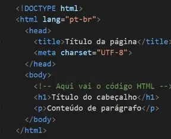

Página web em HTML
Criação de uma página web utilizando a estrutura básica do HTML.
Entrar no projeto
Gabriel Matimbe
Estudante de Suporte Informático
Olá, seja bem-vindo ao meu portfólio
Sou estudante de informática no ITC, interessado em tecnologia, manutenção de equipamentos e desenvolvimento web. Aqui apresento a minha formação, competências e alguns trabalhos que tenho desenvolvido.
O meu nome é Gabriel Matimbe e sou estudante da área de Suporte Informático no ITC. Tenho interesse pela informática e pela tecnologia, especialmente pelo funcionamento, manutenção e suporte de equipamentos e sistemas informáticos.
Durante a minha formação, tenho desenvolvido conhecimentos de hardware, software, sistemas operativos, redes, programas de escritório e criação de páginas web. Procuro aplicar o que aprendo em atividades práticas e continuar a desenvolver as minhas competências.
Neste portfólio apresento também o meu Curriculum Vitae (CV), com informações sobre a minha formação e competências, bem como projetos e trabalhos que demonstram o meu percurso de aprendizagem.
O meu objetivo profissional é tornar-me um profissional qualificado na área de Suporte Informático e Tecnologia da Informação, capaz de prestar suporte eficiente, identificar e resolver problemas informáticos e contribuir para o bom funcionamento dos sistemas e equipamentos de uma organização.
Para alcançar esse objetivo, pretendo concluir a minha formação, adquirir experiência prática, aprender novas tecnologias e aperfeiçoar continuamente as minhas capacidades técnicas e profissionais.
Alguns trabalhos realizados durante a minha aprendizagem.

Criação de uma página web utilizando a estrutura básica do HTML.
Entrar no projetoPrática de estruturação e estilização de uma página web.
Entrar no projeto.png)
Apresentação pessoal das minhas competências e trabalhos.
Entrar no projetoApresentação pessoal de um site criado por mim.
Entrar no projetoUma pequena seleção de imagens relacionadas com a minha aprendizagem e os meus trabalhos.